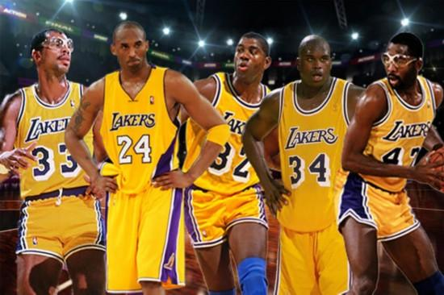

Los Angeles Lakers is a basketball club in Los Angeles, California. Founded in Minneapolis in 1947, the team moved to Los Angeles in 1960. "Laker" refers to people who work or live in the Great Lakes region of the northeast of the United States. This word comes from Minnesota's nickname "the state of ten thousand lakes.". Because of the color of the shirt, the Lakers are also known as the "purple and gold Corps.".
The Lakers joined the NBA in 1948. The biggest characteristic of a team is that there are always superstars associated with it

In the 1950s, George Miken was the early main center of the team. He led the Lakers to win the championship five times in six years, and soon became a big team in the NBA. In the 1960s, under the leadership of Elgin Baylor, Jerry West and Wilt Chamberlain, the Lakers never missed the playoffs throughout the 1960s. In 1975, "Tiangou" Karim Abdul Jabbar joined the Lakers; in 1979, the Lakers selected "magician" Elvin Johnson, who led the team to win the championship and was elected fmvp in the rookie season. He also won five championships with Jabbar and James worthy in the 1980s. In the summer of 1996, the Lakers signed Shaquille O'Neal and traded for rookie Kobe Bryant. They formed a "OK team" to lead the Lakers to three consecutive titles from 2000 to 2002. In 2007, Pau Gasol joined the Lakers, and the team made three finals in 2008-10 and won the championship twice. In April 2016, legend Kobe Bryant announced his retirement. In the summer of 2018, LeBron James joined the Lakers; in the summer of 2019, the Lakers acquired Anthony Davis through a trade, and then won the championship the following year.
By the end of the 2019-20 season, the Lakers have entered the playoffs for 61 times, won the western conference championship for 32 times, and won the NBA championship for 17 times, with a record of 33 consecutive wins in the regular season.